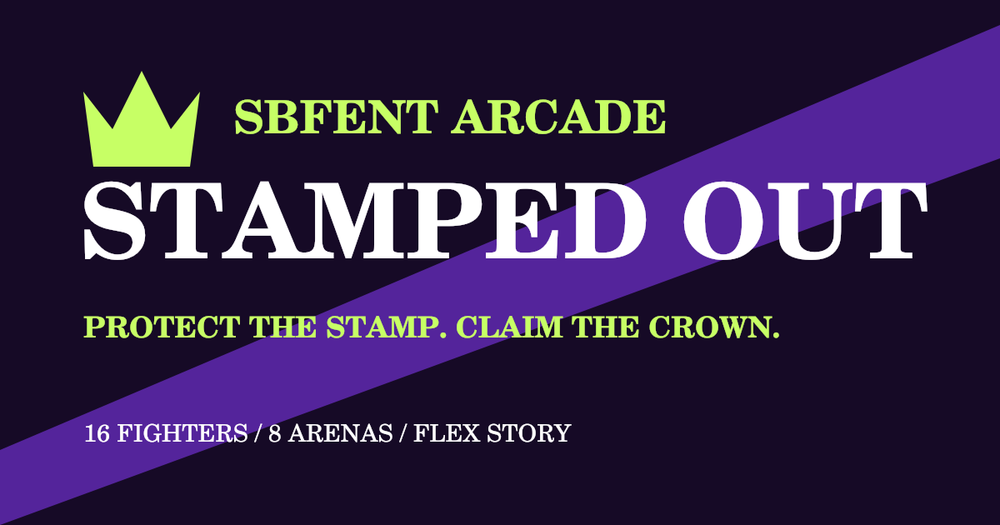

01 / OWN THE ROAD
STREET CROWN.
Race the approved original Street Crown build while the full upgrade is rebuilt directly on its exact foundation.
Play Street Crown →Approved original buildSTAMPED BY FLEX / THE ARCADE
Own the road. Fight for the stamp. Find the lizards. Build your block. Four ways to play in the SBFENT world.
01 / OWN THE ROAD
Race the approved original Street Crown build while the full upgrade is rebuilt directly on its exact foundation.
Play Street Crown →Approved original build
02 / STEP INTO THE ARENA
Sixteen fighters. Eight arenas. One real stamp. Master unique fighting styles, cinematic specials and throws, then take Flex through four story chapters.
Play Stamped Out →Save to your Home Screen03 / THE LIZARD HUNT
Walk four SBFENT locations, track down lizards and collect Flex Bucks. Take on 40 story levels or jump into a 60-second hunt.
Play Detective Flex →How to play & browser game04 / ROLL. BUILD. PROTECT.
Roll the dice, build your town and protect your stamp. Face The Bootlegger, Quiet Money, DJ Blackout and The Wrecking Crew.
Play Roll to Riches ↗Meet the rivalsPlay in your browser on phone or computer. Progress stays with each game’s browser and website address.
KEEP THE GAME CLOSE
Open Stamped Out or Detective Flex in Safari. Tap Share, then Add to Home Screen. Confirm the name and tap Add.
Open your game in Chrome. Open the browser menu and choose Install app or Add to Home screen when available.
In Stamped Out, use the progress backup option in the menu before moving from the private test link. Open the new game and restore that backup to bring your story unlocks and outfits with you.
SBFENT / A WALKABLE 3D WORLD
Step into four SBFENT locations. Walk the roads, look around, enter establishments, and search for the felt lizards. Pick a 60-second hunt or follow Detective Flex through the full story.
OPEN THE DETECTIVE FLEX APP ↗ · Play in a dedicated window and add it to your home screen.
Story: 10 levels at each of four locations. Find six lizards outside and four inside per level. Difficulty rises each level. Progress saves automatically on this device.
Regular: Catch as many lizards as you can in 60 seconds. Story: Clear 10 levels at each of four locations. Each level has 10 lizards and earns 1,000 Flex Bucks. Complete all 40 levels to find 400 lizards and earn 40,000 Flex Bucks. No timer.
Tap Pause to take a break, then Resume search. Story progress saves after every catch. Choose Story to continue your saved run. Restart story starts over while keeping your Flex Bucks. Music is optional. Your catch celebration plays the Stamped by Flex tag; tap Tag sound on to mute it. Rapid catches share one tag so sounds do not overlap. On a computer: WASD / arrows move, Q / R turn, E enters or exits, Space scans, and Shift runs.
100 per lizard · Saved on this device
W A S D or arrows to walk. Q / R to turn. Drag the scene to look around.
E enter / exit · Space scan · Shift run. Phones: slide the MOVE joystick with your left thumb. Hold ↶ / ↷ with your right thumb to turn. Walk into lizards to catch them.
Ready to open the case. Story: six outside and four inside each level.
Play right in your browser—no app download needed. WebGL is the built-in browser technology that displays the game’s 3D roads, trucks, buildings, and characters. Use an up-to-date Safari, Chrome, Firefox, or Edge browser on iPhone, Android, or computer. Your browser and device need to support WebGL.
Timed best scores and your Flex Bucks total stay on this device. Flex Bucks are game points. Music starts when you turn it on. No account needed.